2024 National 5 Chemistry - Paper 2 questions
Source: Scottish Qualifications Authority (SQA) / Qualifications Scotland. This is a StemInteract HTML companion, not an official HTML edition. Selectable text is supplied alongside original page images. Use the images or original PDF for equations, powers, fractions, vector notation, tables and diagrams; text extraction cannot fully preserve mathematical layout.
Jump to a question
PDF page 1
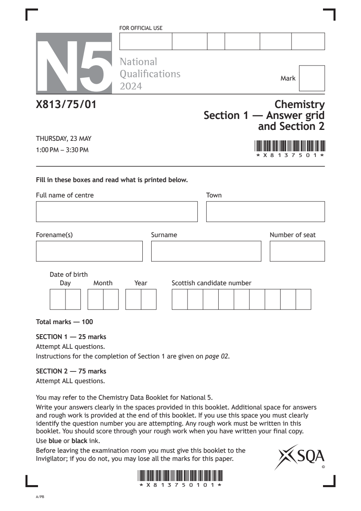
Selectable page text
FOR OFFICIAL USE
N5
National
Qualications
Mark
2024
X813/75/01 Chemistry
Section 1 — Answer grid
and Section 2
THURSDAY, 23 MAY
1:00 PM – 3:30 PM
*X8137501*
Fill in these boxes and read what is printed below.
Full name of centre Town
Forename(s) Surname Number of seat
Date of birth
Day Month Year Scottish candidate number
Total marks — 100
SECTION 1 — 25 marks
Attempt ALL questions.
Instructions for the completion of Section 1 are given on page 02.
SECTION 2 — 75 marks
Attempt ALL questions.
You may refer to the Chemistry Data Booklet for National 5.
Write your answers clearly in the spaces provided in this booklet. Additional space for answers
and rough work is provided at the end of this booklet. If you use this space you must clearly
identify the question number you are attempting. Any rough work must be written in this
booklet. You should score through your rough work when you have written your final copy.
Use blue or black ink.
Before leaving the examination room you must give this booklet to the
Invigilator; if you do not, you may lose all the marks for this paper.
©
*X813750101*
A/PBPDF page 2

Selectable page text
SECTION 1 — 25 marks
The questions for Section 1 are contained in the question paper X813/75/02.
Read these and record your answers on the answer grid on page 03 opposite.
Use blue or black ink. Do NOT use gel pens or pencil.
1. The answer to each question is either A, B, C or D. Decide what your answer is, then fill in
the appropriate bubble (see sample question below).
2. There is only one correct answer to each question.
3. Any rough working should be done on the additional space for answers and rough work at
the end of this booklet.
Sample question
To show that the ink in a ball-pen consists of a mixture of dyes, the method of separation would
be
A fractional distillation
B chromatography
C fractional crystallisation
D filtration.
The correct answer is B — chromatography. The answer B bubble has been clearly filled in (see
below).
A B C D
Changing an answer
If you decide to change your answer, cancel your first answer by putting a cross through it (see
below) and fill in the answer you want. The answer below has been changed to D.
A B C D
If you then decide to change back to an answer you have already scored out, put a tick (✓) to the
right of the answer you want, as shown below:
A B C D A B C D
or
*X813750102*
page 02PDF page 3
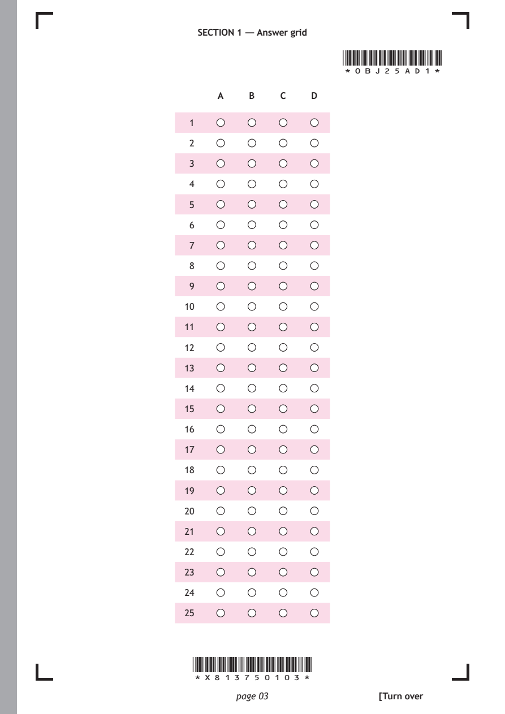
Selectable page text
SECTION 1 — Answer grid
*OBJ25AD1*
A B C D
1
2
3
4
5
6
7
8
9
10
11
12
13
14
15
16
17
18
19
20
21
22
23
24
25
*X813750103*
page 03 [Turn overPDF page 4

Selectable page text
[BLANK PAGE]
DO NOT WRITE ON THIS PAGE
*X813750104*
page 04PDF page 5
Paper 2, Question 1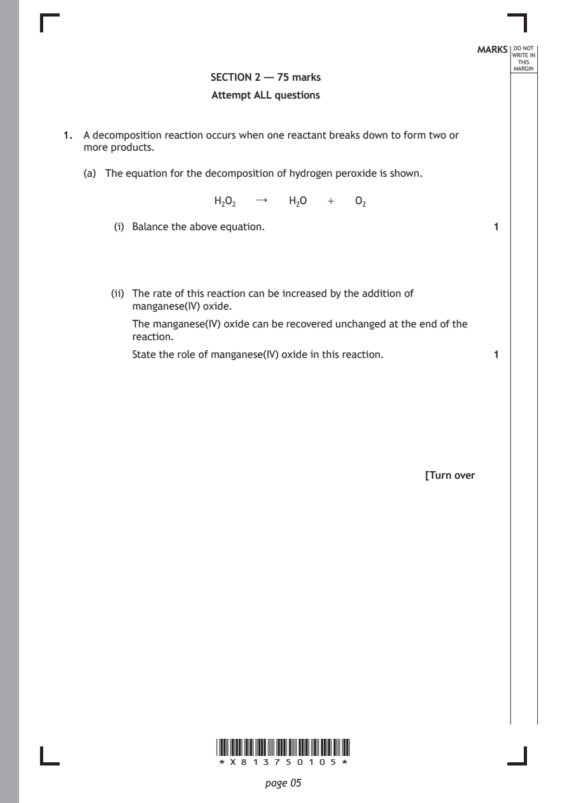
Selectable page text
MARKS _{W}^{D}_{R}^{O}_{I} _{T}^{N}OT
E IN
THIS
MARGIN
SECTION 2 — 75 marks
Attempt ALL questions
1. A decomposition reaction occurs when one reactant breaks down to form two or
more products.
(a) The equation for the decomposition of hydrogen peroxide is shown.
H₂O₂ ↓ H₂O + O₂
(i) Balance the above equation. 1
(ii) The rate of this reaction can be increased by the addition of
manganese(IV) oxide.
The manganese(IV) oxide can be recovered unchanged at the end of the
reaction.
State the role of manganese(IV) oxide in this reaction. 1
[Turn over
*X813750105*
page 05PDF page 6
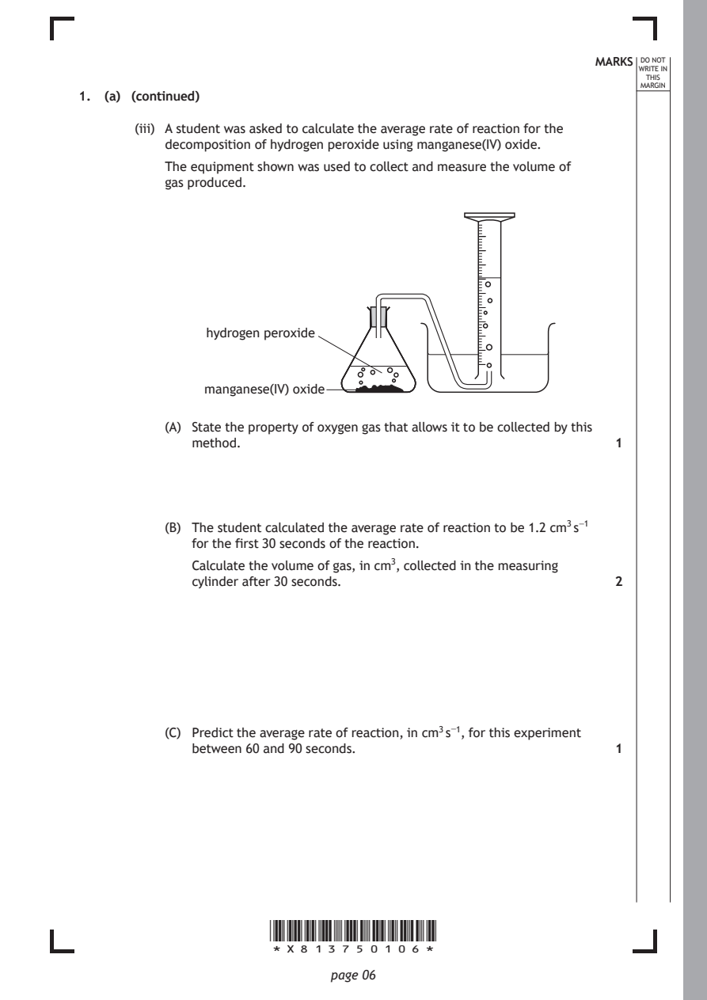
Selectable page text
MARKS _{W}^{D}_{R}^{O}_{I} _{T}^{N}OT
E IN
THIS
MARGIN
1. (a) (continued)
(iii) A student was asked to calculate the average rate of reaction for the
decomposition of hydrogen peroxide using manganese(IV) oxide.
The equipment shown was used to collect and measure the volume of
gas produced.
hydrogen peroxide
manganese(IV) oxide
(A) State the property of oxygen gas that allows it to be collected by this
method. 1
(B) The student calculated the average rate of reaction to be 1.2 cm³ s⁻¹
for the first 30 seconds of the reaction.
Calculate the volume of gas, in cm³, collected in the measuring
cylinder after 30 seconds. 2
(C) Predict the average rate of reaction, in cm³ s⁻¹, for this experiment
between 60 and 90 seconds. 1
*X813750106*
page 06PDF page 7
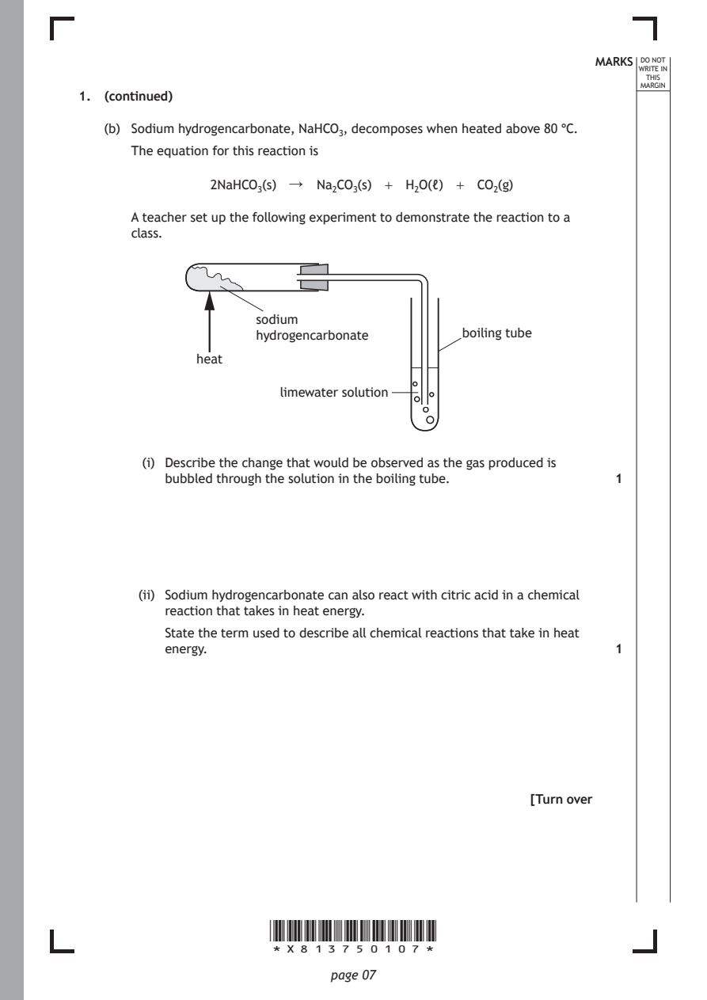
Selectable page text
MARKS _{W}^{D}_{R}^{O}_{I} _{T}^{N}OT
E IN
THIS
MARGIN
1. (continued)
(b) Sodium hydrogencarbonate, NaHCO₃, decomposes when heated above 80 °C.
The equation for this reaction is
2NaHCO₃(s) ↓ Na₂CO₃(s) + H₂O(ℓ) + CO₂(g)
A teacher set up the following experiment to demonstrate the reaction to a
class.
sodium
hydrogencarbonate boiling tube
heat
limewater solution
(i) Describe the change that would be observed as the gas produced is
bubbled through the solution in the boiling tube. 1
(ii) Sodium hydrogencarbonate can also react with citric acid in a chemical
reaction that takes in heat energy.
State the term used to describe all chemical reactions that take in heat
energy. 1
[Turn over
*X813750107*
page 07PDF page 8
Paper 2, Question 2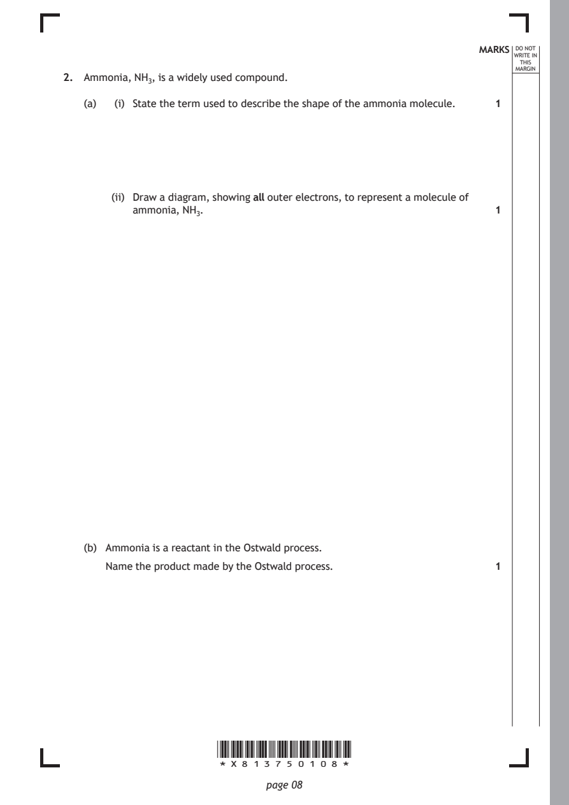
Selectable page text
MARKS _{W}^{D}_{R}^{O}_{I} _{T}^{N}OT
E IN
THIS
MARGIN
2. Ammonia, NH₃, is a widely used compound.
(a) (i) State the term used to describe the shape of the ammonia molecule. 1
(ii) Draw a diagram, showing all outer electrons, to represent a molecule of
ammonia, NH₃. 1
(b) Ammonia is a reactant in the Ostwald process.
Name the product made by the Ostwald process. 1
*X813750108*
page 08PDF page 9
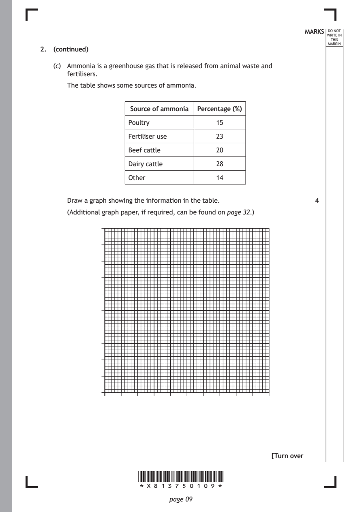
Selectable page text
MARKS _{W}^{D}_{R}^{O}_{I} _{T}^{N}OT
E IN
THIS
MARGIN
2. (continued)
(c) Ammonia is a greenhouse gas that is released from animal waste and
fertilisers.
The table shows some sources of ammonia.
Source of ammonia Percentage (%)
Poultry 15
Fertiliser use 23
Beef cattle 20
Dairy cattle 28
Other 14
Draw a graph showing the information in the table. 4
(Additional graph paper, if required, can be found on page 32.)
[Turn over
*X813750109*
page 09PDF page 10
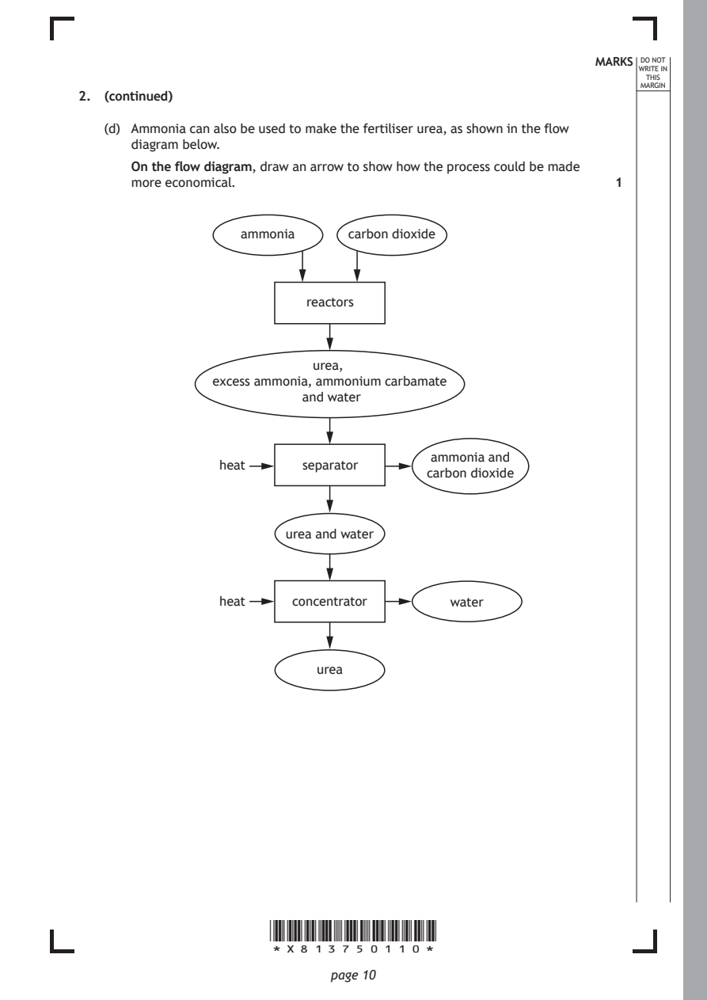
Selectable page text
MARKS _{W}^{D}_{R}^{O}_{I} _{T}^{N}OT
E IN
THIS
MARGIN
2. (continued)
(d) Ammonia can also be used to make the fertiliser urea, as shown in the flow
diagram below.
On the flow diagram, draw an arrow to show how the process could be made
more economical. 1
ammonia carbon dioxide
reactors
urea,
excess ammonia, ammonium carbamate
and water
ammonia and
heat separator
carbon dioxide
urea and water
heat concentrator water
urea
*X813750110*
page 10PDF page 11
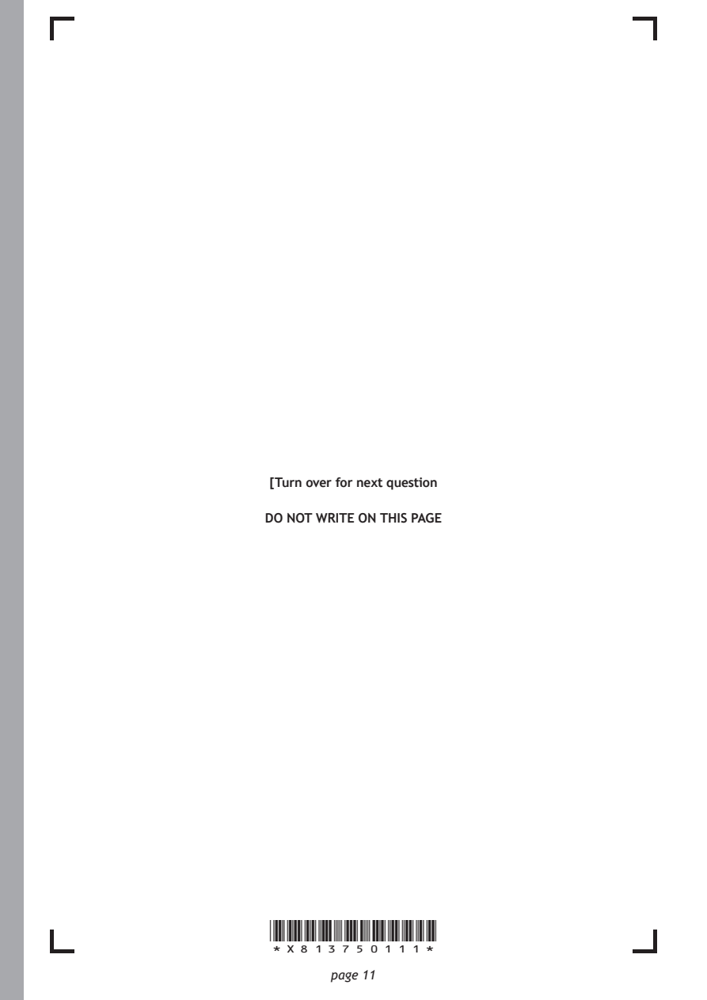
Selectable page text
[Turn over for next question
DO NOT WRITE ON THIS PAGE
*X813750111*
page 11PDF page 12
Paper 2, Question 3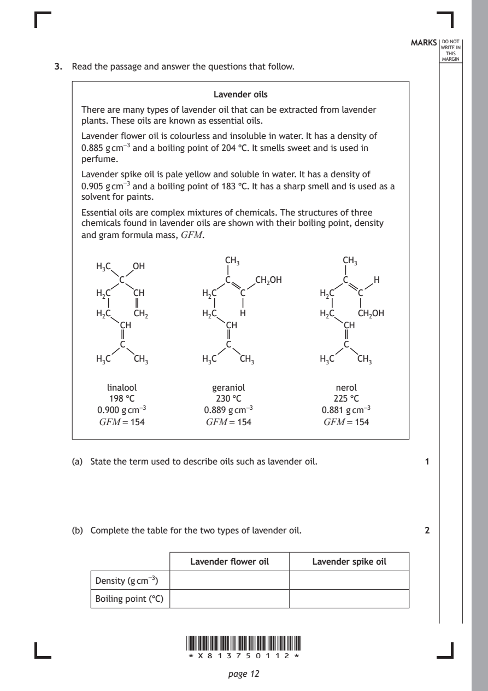
Selectable page text
MARKS _{W}^{D}_{R}^{O}_{I} _{T}^{N}OT
E IN
THIS
MARGIN
3. Read the passage and answer the questions that follow.
Lavender oils
There are many types of lavender oil that can be extracted from lavender
plants. These oils are known as essential oils.
Lavender flower oil is colourless and insoluble in water. It has a density of
0.885 g cm⁻³ and a boiling point of 204 °C. It smells sweet and is used in
perfume.
Lavender spike oil is pale yellow and soluble in water. It has a density of
0.905 g cm⁻³ and a boiling point of 183 °C. It has a sharp smell and is used as a
solvent for paints.
Essential oils are complex mixtures of chemicals. The structures of three
chemicals found in lavender oils are shown with their boiling point, density
and gram formula mass, GFM.
CH₃ CH₃
H₃C OH
C C CH₂OH C H
H₂C CH H₂C C H₂C C
H₂C CH₂ H₂C H H₂C CH₂OH
CH CH CH
C C C
H₃C CH₃ H₃C CH₃ H₃C CH₃
linalool geraniol nerol
198 °C 230 °C 225 °C
0.900 g cm⁻³ 0.889 g cm⁻³ 0.881 g cm⁻³
GFM = 154 GFM = 154 GFM = 154
(a) State the term used to describe oils such as lavender oil. 1
(b) Complete the table for the two types of lavender oil. 2
Lavender flower oil Lavender spike oil
Density (g cm⁻³)
Boiling point (°C)
*X813750112*
page 12PDF page 13
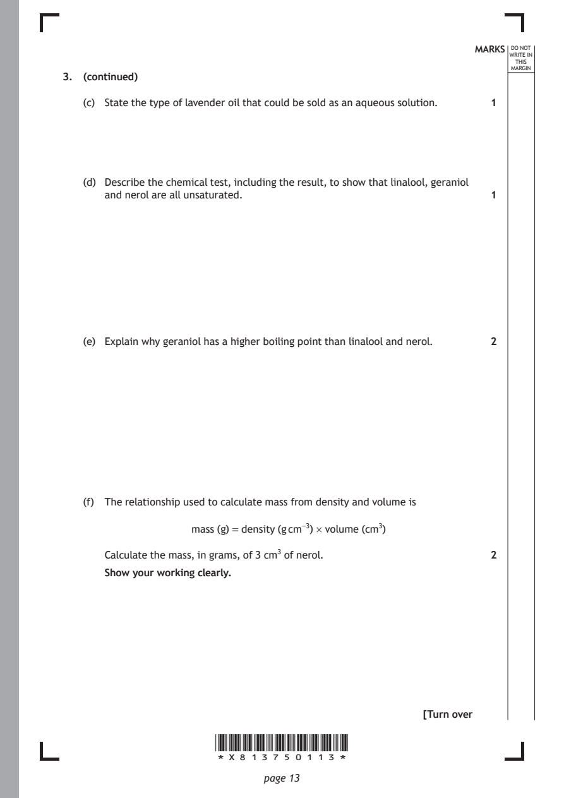
Selectable page text
MARKS _{W}^{D}_{R}^{O}_{I} _{T}^{N}OT
E IN
THIS
MARGIN
3. (continued)
(c) State the type of lavender oil that could be sold as an aqueous solution. 1
(d) Describe the chemical test, including the result, to show that linalool, geraniol
and nerol are all unsaturated. 1
(e) Explain why geraniol has a higher boiling point than linalool and nerol. 2
(f) The relationship used to calculate mass from density and volume is
mass (g) = density (g cm⁻³) × volume (cm³)
Calculate the mass, in grams, of 3 cm³ of nerol. 2
Show your working clearly.
[Turn over
*X813750113*
page 13PDF page 14
Paper 2, Question 4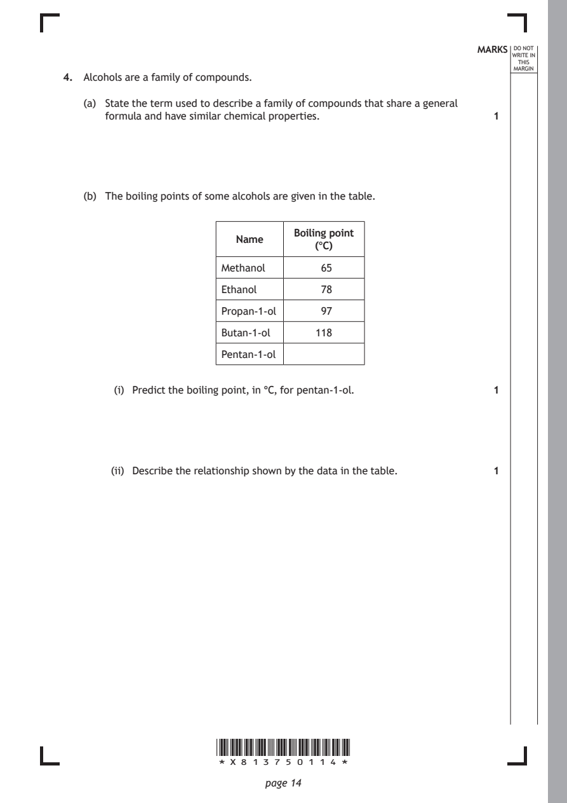
Selectable page text
MARKS _{W}^{D}_{R}^{O}_{I} _{T}^{N}OT
E IN
THIS
MARGIN
4. Alcohols are a family of compounds.
(a) State the term used to describe a family of compounds that share a general
formula and have similar chemical properties. 1
(b) The boiling points of some alcohols are given in the table.
Boiling point
Name
(°C)
Methanol 65
Ethanol 78
Propan-1-ol 97
Butan-1-ol 118
Pentan-1-ol
(i) Predict the boiling point, in °C, for pentan-1-ol. 1
(ii) Describe the relationship shown by the data in the table. 1
*X813750114*
page 14PDF page 15
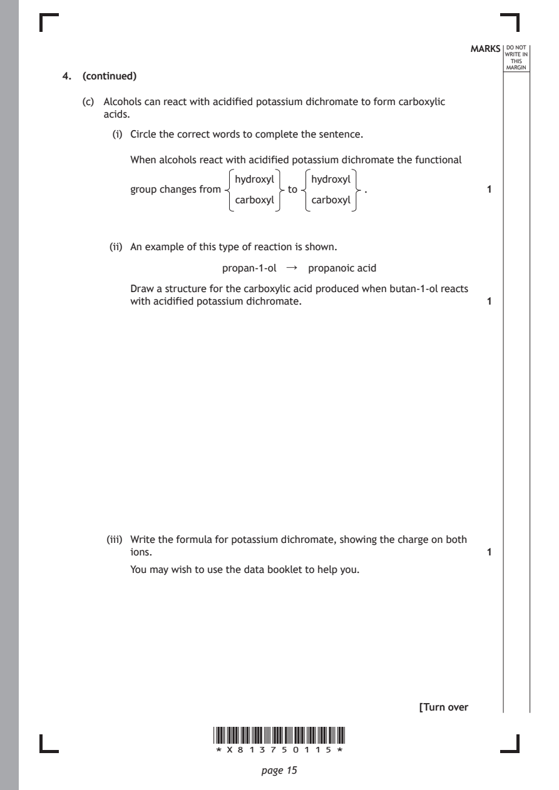
Selectable page text
MARKS _{W}^{D}_{R}^{O}_{I} _{T}^{N}OT
E IN
THIS
MARGIN
4. (continued)
(c) Alcohols can react with acidified potassium dichromate to form carboxylic
acids.
(i) Circle the correct words to complete the sentence.
When alcohols react with acidified potassium dichromate the functional
hydroxyl hydroxyl
group changes from to . 1
carboxyl carboxyl
(ii) An example of this type of reaction is shown.
propan-1-ol ↓ propanoic acid
Draw a structure for the carboxylic acid produced when butan-1-ol reacts
with acidified potassium dichromate. 1
(iii) Write the formula for potassium dichromate, showing the charge on both
ions. 1
You may wish to use the data booklet to help you.
[Turn over
*X813750115*
page 15PDF page 16
Paper 2, Question 5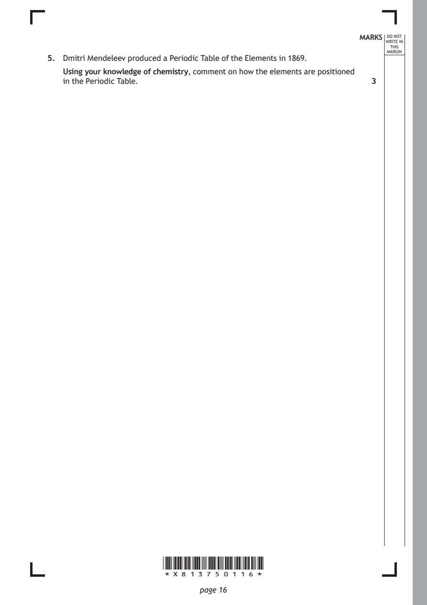
Selectable page text
MARKS _{W}^{D}_{R}^{O}_{I} _{T}^{N}OT
E IN
THIS
MARGIN
5. Dmitri Mendeleev produced a Periodic Table of the Elements in 1869.
Using your knowledge of chemistry, comment on how the elements are positioned
in the Periodic Table. 3
*X813750116*
page 16PDF page 17
Paper 2, Question 6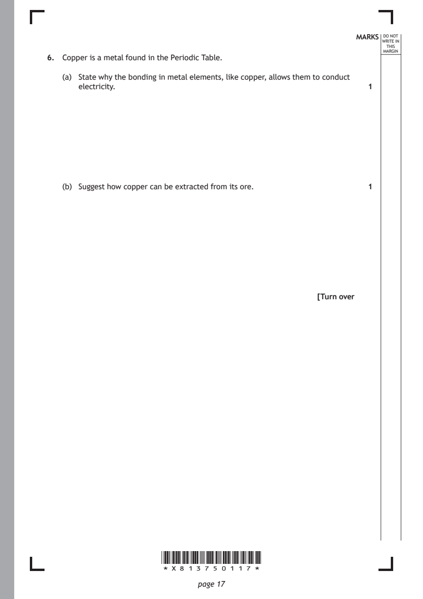
Selectable page text
MARKS _{W}^{D}_{R}^{O}_{I} _{T}^{N}OT
E IN
THIS
MARGIN
6. Copper is a metal found in the Periodic Table.
(a) State why the bonding in metal elements, like copper, allows them to conduct
electricity. 1
(b) Suggest how copper can be extracted from its ore. 1
[Turn over
*X813750117*
page 17PDF page 18
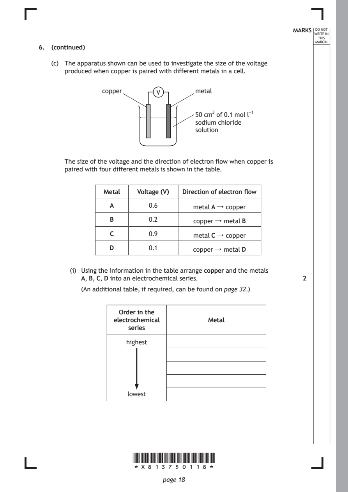
Selectable page text
MARKS _{W}^{D}_{R}^{O}_{I} _{T}^{N}OT
E IN
THIS
MARGIN
6. (continued)
(c) The apparatus shown can be used to investigate the size of the voltage
produced when copper is paired with different metals in a cell.
copper V metal
50 cm³ of 0.1 mol l⁻¹
sodium chloride
solution
The size of the voltage and the direction of electron flow when copper is
paired with four different metals is shown in the table.
Metal Voltage (V) Direction of electron flow
A 0.6 metal A ↓ copper
B 0.2 copper ↓ metal B
C 0.9 metal C ↓ copper
D 0.1 copper ↓ metal D
(i) Using the information in the table arrange copper and the metals
A, B, C, D into an electrochemical series. 2
(An additional table, if required, can be found on page 32.)
Order in the
electrochemical Metal
series
highest
lowest
*X813750118*
page 18PDF page 19
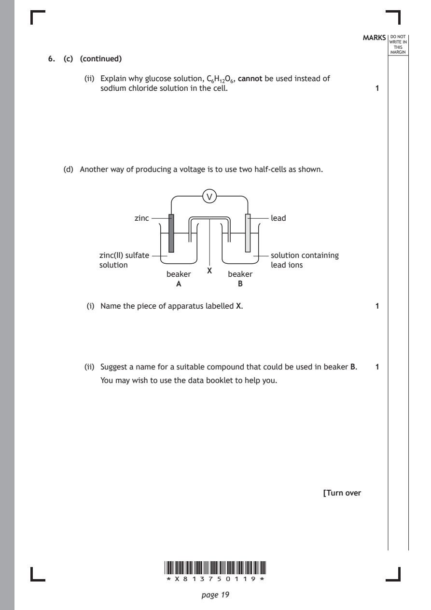
Selectable page text
MARKS _{W}^{D}_{R}^{O}_{I} _{T}^{N}OT
E IN
THIS
MARGIN
6. (c) (continued)
(ii) Explain why glucose solution, C₆H₁ O₆, cannot be used instead of
sodium chloride solution in the cel²l. 1
(d) Another way of producing a voltage is to use two half-cells as shown.
V
zinc lead
zinc(II) sulfate solution containing
solution lead ions
X
beaker beaker
A B
(i) Name the piece of apparatus labelled X. 1
(ii) Suggest a name for a suitable compound that could be used in beaker B. 1
You may wish to use the data booklet to help you.
[Turn over
*X813750119*
page 19PDF page 20
Paper 2, Question 7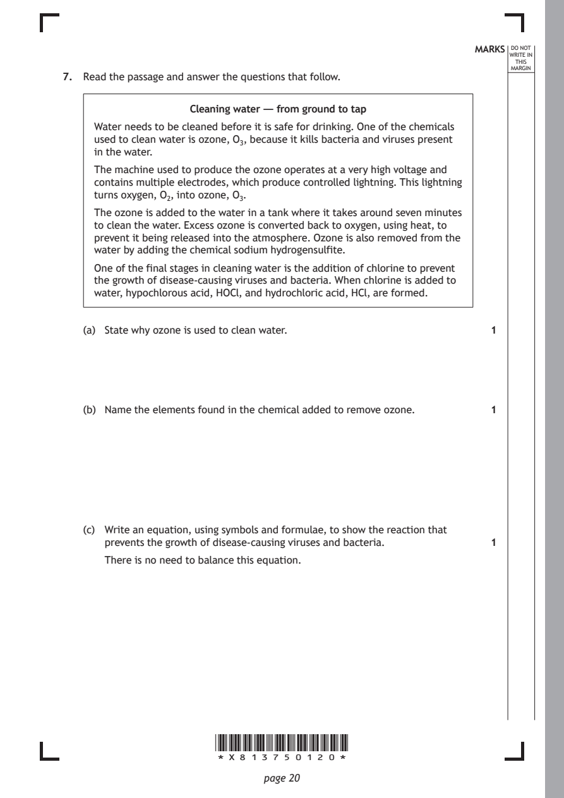
Selectable page text
MARKS _{W}^{D}_{R}^{O}_{I} _{T}^{N}OT
E IN
THIS
MARGIN
7. Read the passage and answer the questions that follow.
Cleaning water — from ground to tap
Water needs to be cleaned before it is safe for drinking. One of the chemicals
used to clean water is ozone, O₃, because it kills bacteria and viruses present
in the water.
The machine used to produce the ozone operates at a very high voltage and
contains multiple electrodes, which produce controlled lightning. This lightning
turns oxygen, O₂, into ozone, O₃.
The ozone is added to the water in a tank where it takes around seven minutes
to clean the water. Excess ozone is converted back to oxygen, using heat, to
prevent it being released into the atmosphere. Ozone is also removed from the
water by adding the chemical sodium hydrogensulfite.
One of the final stages in cleaning water is the addition of chlorine to prevent
the growth of disease-causing viruses and bacteria. When chlorine is added to
water, hypochlorous acid, HOCl, and hydrochloric acid, HCl, are formed.
(a) State why ozone is used to clean water. 1
(b) Name the elements found in the chemical added to remove ozone. 1
(c) Write an equation, using symbols and formulae, to show the reaction that
prevents the growth of disease-causing viruses and bacteria. 1
There is no need to balance this equation.
*X813750120*
page 20PDF page 21
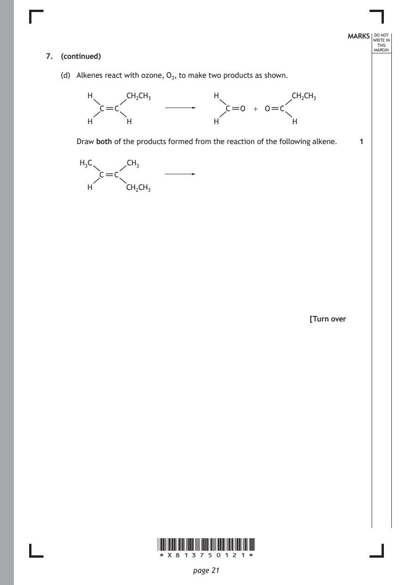
Selectable page text
MARKS _{W}^{D}_{R}^{O}_{I} _{T}^{N}OT
E IN
THIS
MARGIN
7. (continued)
(d) Alkenes react with ozone, O₃, to make two products as shown.
H CH₂CH₃ H CH₂CH₃
C C C O + O C
H H H H
Draw both of the products formed from the reaction of the following alkene. 1
H₃C CH₃
C C
H CH₂CH₃
[Turn over
*X813750121*
page 21PDF page 22
Paper 2, Question 8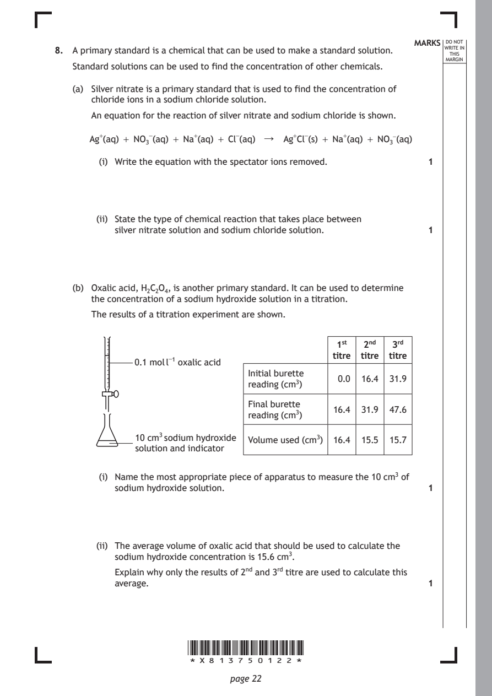
Selectable page text
MARKS _{W}^{D}_{R}^{O}_{I} _{T}^{N}OT
8. A primary standard is a chemical that can be used to make a standard solution. E IN
THIS
MARGIN
Standard solutions can be used to find the concentration of other chemicals.
(a) Silver nitrate is a primary standard that is used to find the concentration of
chloride ions in a sodium chloride solution.
An equation for the reaction of silver nitrate and sodium chloride is shown.
Ag⁺(aq) + NO₃⁻(aq) + Na⁺(aq) + Cl⁻(aq) ↓ Ag⁺Cl⁻(s) + Na⁺(aq) + NO₃⁻(aq)
(i) Write the equation with the spectator ions removed. 1
(ii) State the type of chemical reaction that takes place between
silver nitrate solution and sodium chloride solution. 1
(b) Oxalic acid, H₂C₂O₄, is another primary standard. It can be used to determine
the concentration of a sodium hydroxide solution in a titration.
The results of a titration experiment are shown.
1^{s}^{t} 2ⁿ^{d} 3^{r}^{d}
titre titre titre
0.1 mol l⁻¹ oxalic acid
Initial burette
0.0 16.4 31.9
reading (cm³)
Final burette
16.4 31.9 47.6
reading (cm³)
10 cm³ sodium hydroxide Volume used (cm³) 16.4 15.5 15.7
solution and indicator
(i) Name the most appropriate piece of apparatus to measure the 10 cm³ of
sodium hydroxide solution. 1
(ii) The average volume of oxalic acid that should be used to calculate the
sodium hydroxide concentration is 15.6 cm³.
Explain why only the results of 2ⁿ^{d} and 3^{r}^{d} titre are used to calculate this
average. 1
*X813750122*
page 22PDF page 23
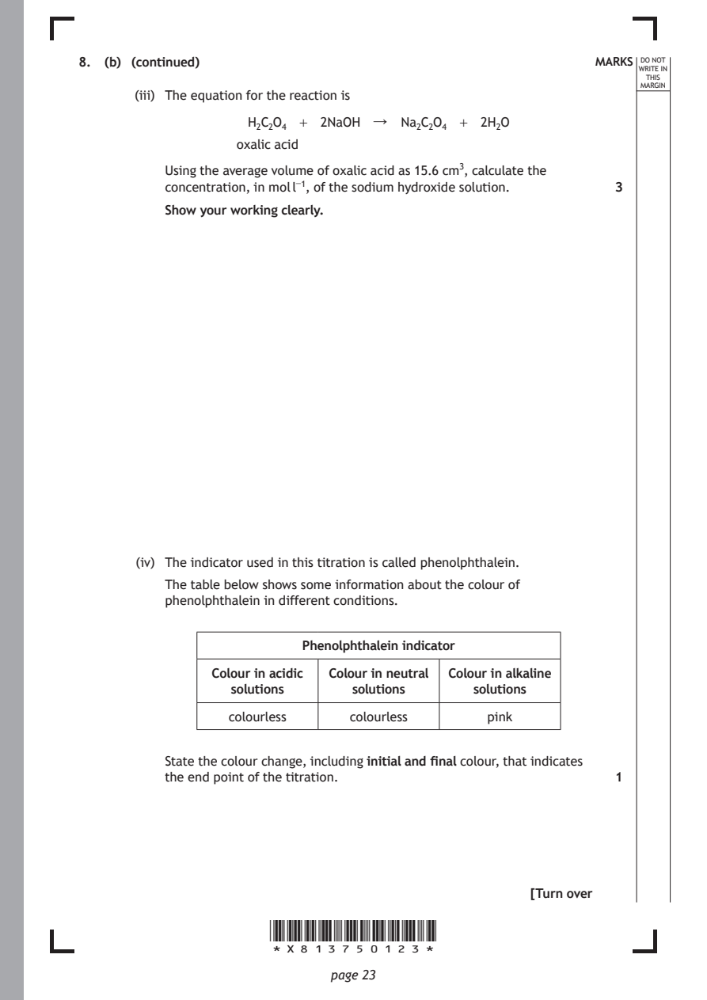
Selectable page text
8. (b) (continued) MARKS _{W}^{D}_{R}^{O}_{I} _{T}^{N}OT
E IN
THIS
MARGIN
(iii) The equation for the reaction is
H₂C₂O₄ + 2NaOH ↓ Na₂C₂O₄ + 2H₂O
oxalic acid
Using the average volume of oxalic acid as 15.6 cm³, calculate the
concentration, in mol l⁻¹, of the sodium hydroxide solution. 3
Show your working clearly.
(iv) The indicator used in this titration is called phenolphthalein.
The table below shows some information about the colour of
phenolphthalein in different conditions.
Phenolphthalein indicator
Colour in acidic Colour in neutral Colour in alkaline
solutions solutions solutions
colourless colourless pink
State the colour change, including initial and final colour, that indicates
the end point of the titration. 1
[Turn over
*X813750123*
page 23PDF page 24
Paper 2, Question 9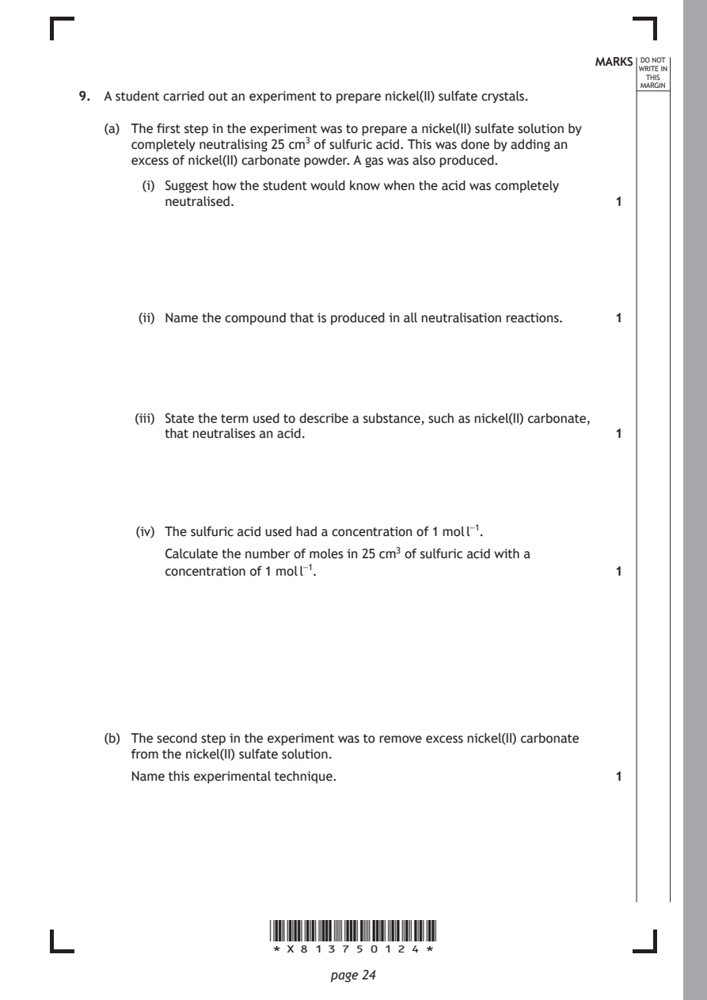
Selectable page text
MARKS _{W}^{D}_{R}^{O}_{I} _{T}^{N}OT
E IN
THIS
MARGIN
9. A student carried out an experiment to prepare nickel(II) sulfate crystals.
(a) The first step in the experiment was to prepare a nickel(II) sulfate solution by
completely neutralising 25 cm³ of sulfuric acid. This was done by adding an
excess of nickel(II) carbonate powder. A gas was also produced.
(i) Suggest how the student would know when the acid was completely
neutralised. 1
(ii) Name the compound that is produced in all neutralisation reactions. 1
(iii) State the term used to describe a substance, such as nickel(II) carbonate,
that neutralises an acid. 1
(iv) The sulfuric acid used had a concentration of 1 mol l⁻¹.
Calculate the number of moles in 25 cm³ of sulfuric acid with a
concentration of 1 mol l⁻¹. 1
(b) The second step in the experiment was to remove excess nickel(II) carbonate
from the nickel(II) sulfate solution.
Name this experimental technique. 1
*X813750124*
page 24PDF page 25
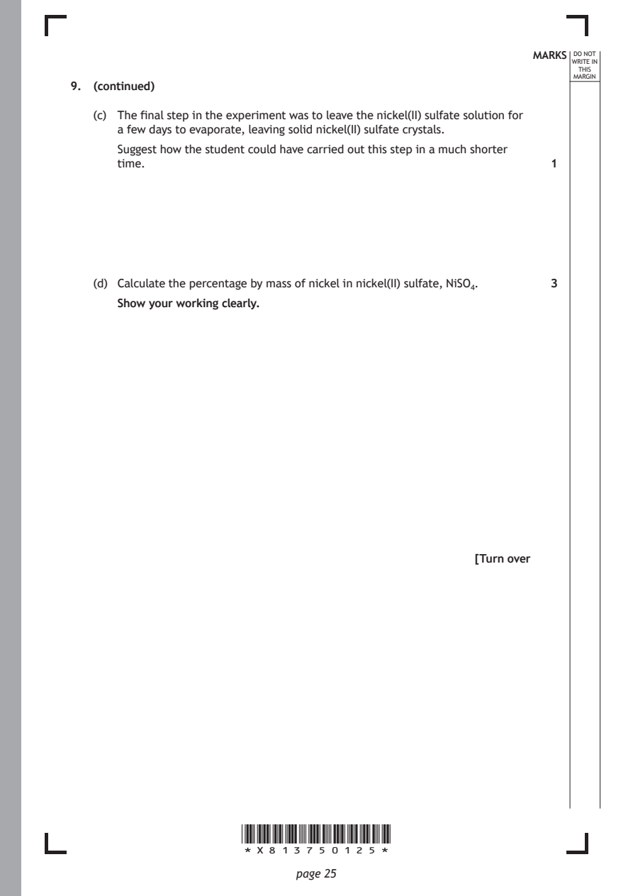
Selectable page text
MARKS _{W}^{D}_{R}^{O}_{I} _{T}^{N}OT
E IN
THIS
MARGIN
9. (continued)
(c) The final step in the experiment was to leave the nickel(II) sulfate solution for
a few days to evaporate, leaving solid nickel(II) sulfate crystals.
Suggest how the student could have carried out this step in a much shorter
time. 1
(d) Calculate the percentage by mass of nickel in nickel(II) sulfate, NiSO₄. 3
Show your working clearly.
[Turn over
*X813750125*
page 25PDF page 26
Paper 2, Question 10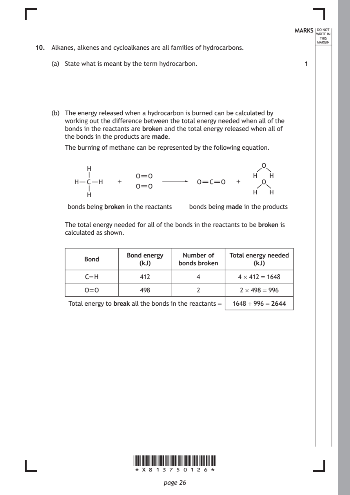
Selectable page text
MARKS _{W}^{D}_{R}^{O}_{I} _{T}^{N}OT
E IN
THIS
MARGIN
10. Alkanes, alkenes and cycloalkanes are all families of hydrocarbons.
(a) State what is meant by the term hydrocarbon. 1
(b) The energy released when a hydrocarbon is burned can be calculated by
working out the difference between the total energy needed when all of the
bonds in the reactants are broken and the total energy released when all of
the bonds in the products are made.
The burning of methane can be represented by the following equation.
O
H
O O H H
H C H + O C O + O
O O
H H
H
bonds being broken in the reactants bonds being made in the products
The total energy needed for all of the bonds in the reactants to be broken is
calculated as shown.
Bond energy Number of Total energy needed
Bond
(kJ) bonds broken (kJ)
C –H 412 4 4 × 412 = 1648
O = O 498 2 2 × 498 = 996
Total energy to break all the bonds in the reactants = 1648 + 996 = 2644
*X813750126*
page 26PDF page 27
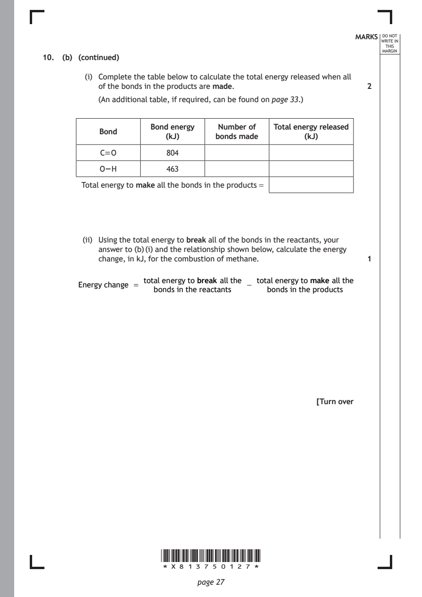
Selectable page text
MARKS _{W}^{D}_{R}^{O}_{I} _{T}^{N}OT
E IN
THIS
MARGIN
10. (b) (continued)
(i) Complete the table below to calculate the total energy released when all
of the bonds in the products are made. 2
(An additional table, if required, can be found on page 33.)
Bond energy Number of Total energy released
Bond
(kJ) bonds made (kJ)
C = O 804
O –H 463
Total energy to make all the bonds in the products =
(ii) Using the total energy to break all of the bonds in the reactants, your
answer to (b) (i) and the relationship shown below, calculate the energy
change, in kJ, for the combustion of methane. 1
total energy to break all the total energy to make all the
Energy change = −
bonds in the reactants bonds in the products
[Turn over
*X813750127*
page 27PDF page 28
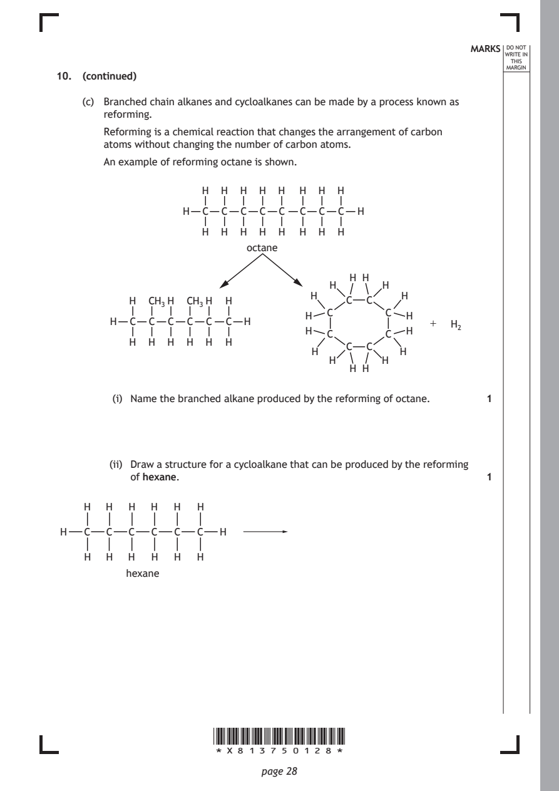
Selectable page text
MARKS _{W}^{D}_{R}^{O}_{I} _{T}^{N}OT
E IN
THIS
MARGIN
10. (continued)
(c) Branched chain alkanes and cycloalkanes can be made by a process known as
reforming.
Reforming is a chemical reaction that changes the arrangement of carbon
atoms without changing the number of carbon atoms.
An example of reforming octane is shown.
H H H H H H H H
H C C C C C C C C H
H H H H H H H H
octane
H H
H H
H H
H CH₃H CH₃H H C C
C C
H H
H C C C C C C H + H₂
H C C H
H H H H H H
C C
H H
H H
H H
(i) Name the branched alkane produced by the reforming of octane. 1
(ii) Draw a structure for a cycloalkane that can be produced by the reforming
of hexane. 1
H H H H H H
H C C C C C C H
H H H H H H
hexane
*X813750128*
page 28PDF page 29
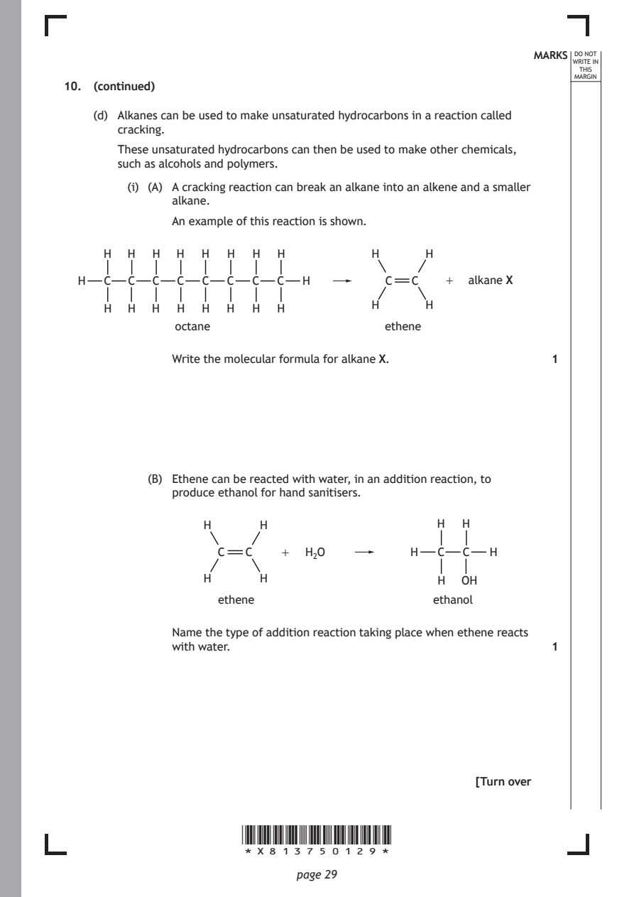
Selectable page text
MARKS _{W}^{D}_{R}^{O}_{I} _{T}^{N}OT
E IN
THIS
MARGIN
10. (continued)
(d) Alkanes can be used to make unsaturated hydrocarbons in a reaction called
cracking.
These unsaturated hydrocarbons can then be used to make other chemicals,
such as alcohols and polymers.
(i) (A) A cracking reaction can break an alkane into an alkene and a smaller
alkane.
An example of this reaction is shown.
H H H H H H H H H H
H C C C C C C C C H C C + alkane X
H H H H H H H H H H
octane ethene
Write the molecular formula for alkane X. 1
(B) Ethene can be reacted with water, in an addition reaction, to
produce ethanol for hand sanitisers.
H H H H
C C + H₂O H C C H
H H H OH
ethene ethanol
Name the type of addition reaction taking place when ethene reacts
with water. 1
[Turn over
*X813750129*
page 29PDF page 30
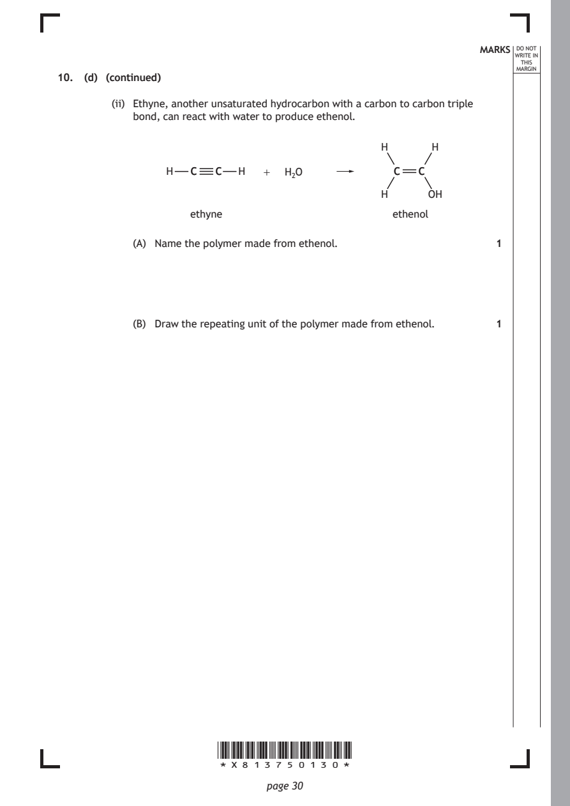
Selectable page text
MARKS _{W}^{D}_{R}^{O}_{I} _{T}^{N}OT
E IN
THIS
MARGIN
10. (d) (continued)
(ii) Ethyne, another unsaturated hydrocarbon with a carbon to carbon triple
bond, can react with water to produce ethenol.
H H
H CC CC H + H₂O CC CC
H OH
ethyne ethenol
(A) Name the polymer made from ethenol. 1
(B) Draw the repeating unit of the polymer made from ethenol. 1
*X813750130*
page 30PDF page 31
Paper 2, Question 11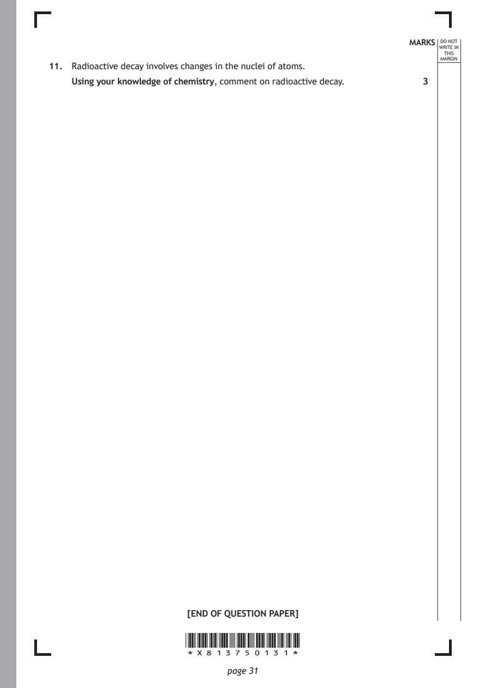
Selectable page text
MARKS _{W}^{D}_{R}^{O}_{I} _{T}^{N}OT
E IN
THIS
MARGIN
11. Radioactive decay involves changes in the nuclei of atoms.
Using your knowledge of chemistry, comment on radioactive decay. 3
[END OF QUESTION PAPER]
*X813750131*
page 31PDF page 32
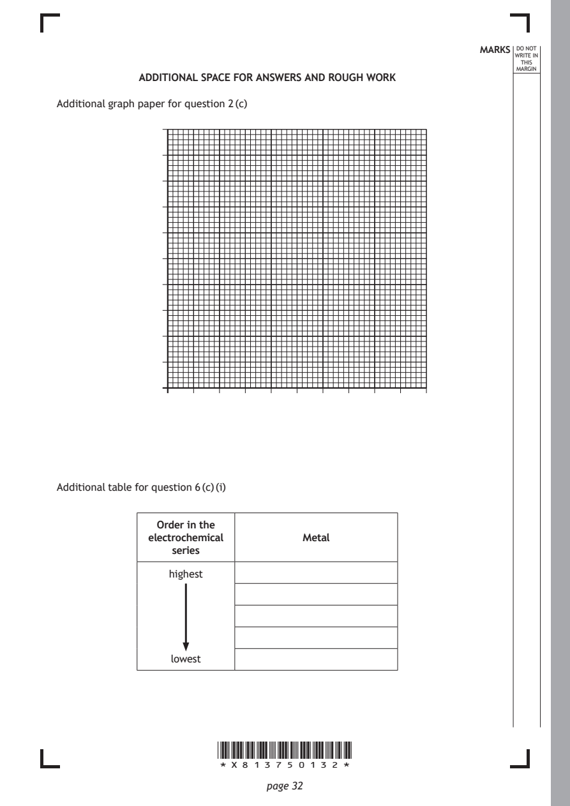
Selectable page text
MARKS _{W}^{D}_{R}^{O}_{I} _{T}^{N}OT
E IN
THIS
MARGIN
ADDITIONAL SPACE FOR ANSWERS AND ROUGH WORK
Additional graph paper for question 2 (c)
Additional table for question 6 (c) (i)
Order in the
electrochemical Metal
series
highest
lowest
*X813750132*
page 32PDF page 33
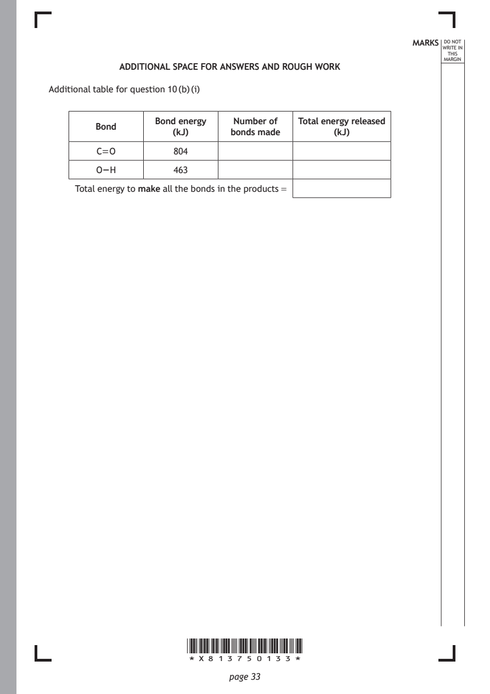
Selectable page text
MARKS _{W}^{D}_{R}^{O}_{I} _{T}^{N}OT
E IN
THIS
MARGIN
ADDITIONAL SPACE FOR ANSWERS AND ROUGH WORK
Additional table for question 10 (b) (i)
Bond energy Number of Total energy released
Bond
(kJ) bonds made (kJ)
C = O 804
O –H 463
Total energy to make all the bonds in the products =
*X813750133*
page 33PDF page 34

Selectable page text
MARKS _{W}^{D}_{R}^{O}_{I} _{T}^{N}OT
E IN
THIS
MARGIN
ADDITIONAL SPACE FOR ANSWERS AND ROUGH WORK
*X813750134*
page 34PDF page 35
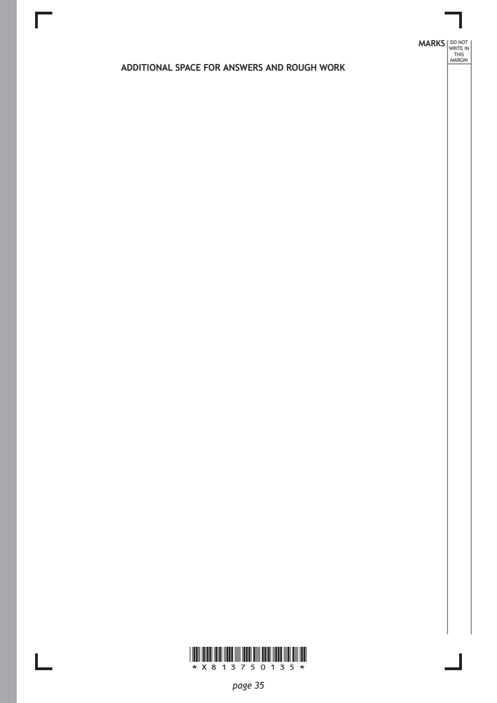
Selectable page text
MARKS _{W}^{D}_{R}^{O}_{I} _{T}^{N}OT
E IN
THIS
MARGIN
ADDITIONAL SPACE FOR ANSWERS AND ROUGH WORK
*X813750135*
page 35PDF page 36

Selectable page text
[BLANK PAGE]
DO NOT WRITE ON THIS PAGE
*X813750136*
page 36